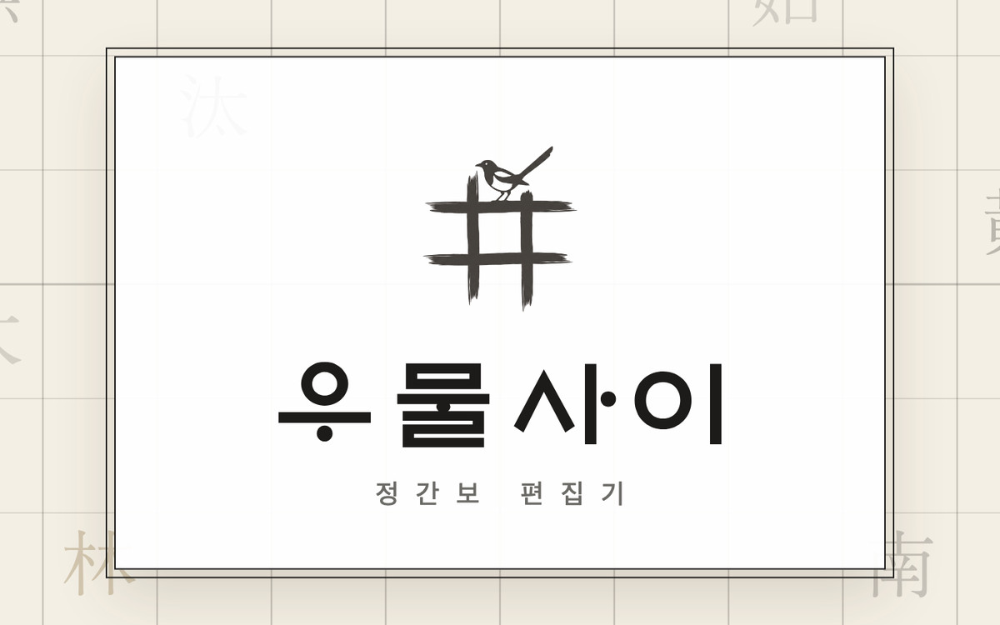
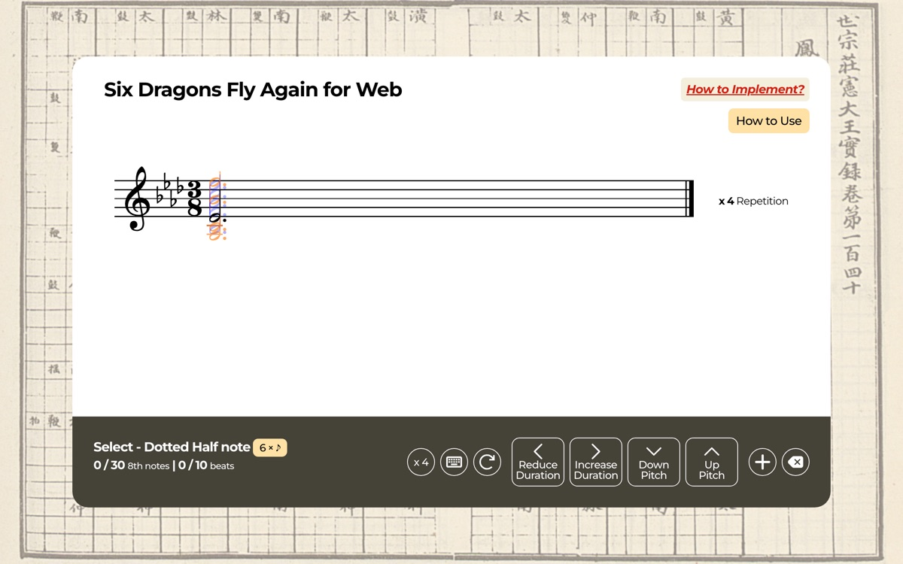
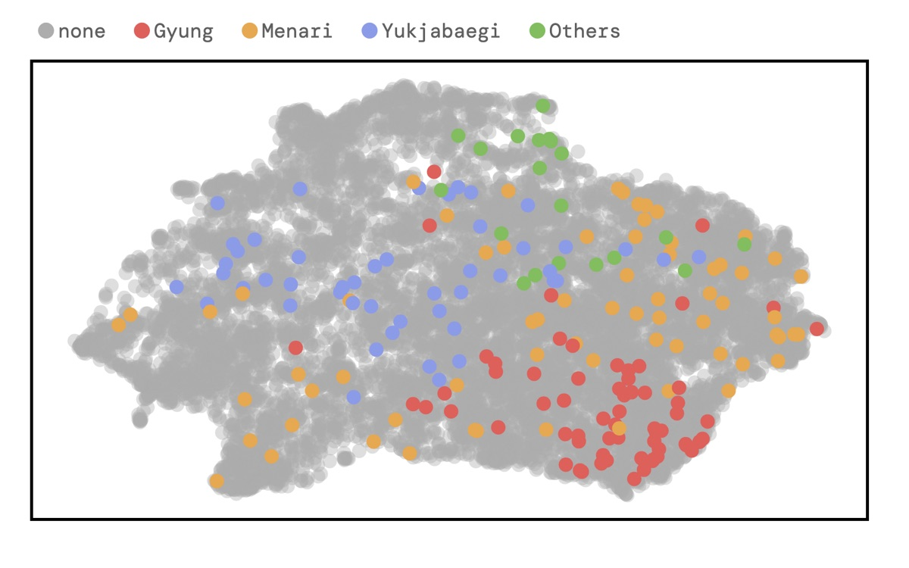
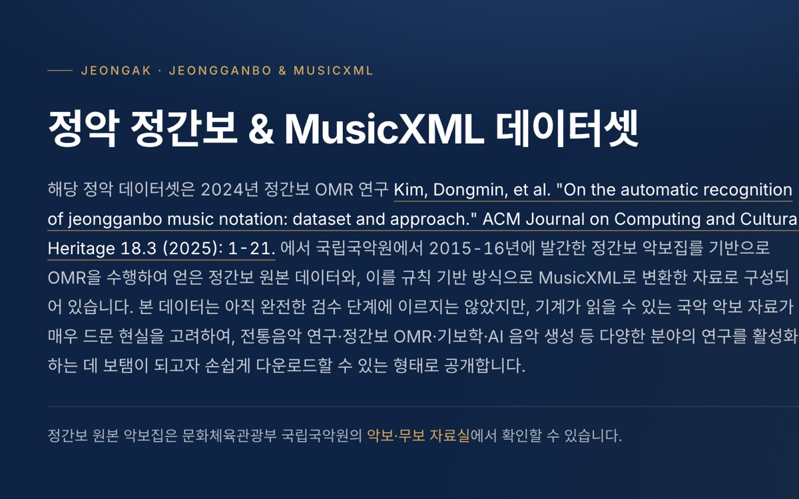

Resources
Interactive demos, dataset releases, and open-source code from my research on Korean traditional music.

tool
Umulsai (우물사이)
A web-based Jeongganbo editor — write, play back, print, and export Korean court-music notation in the browser (beta, Korean UI).


